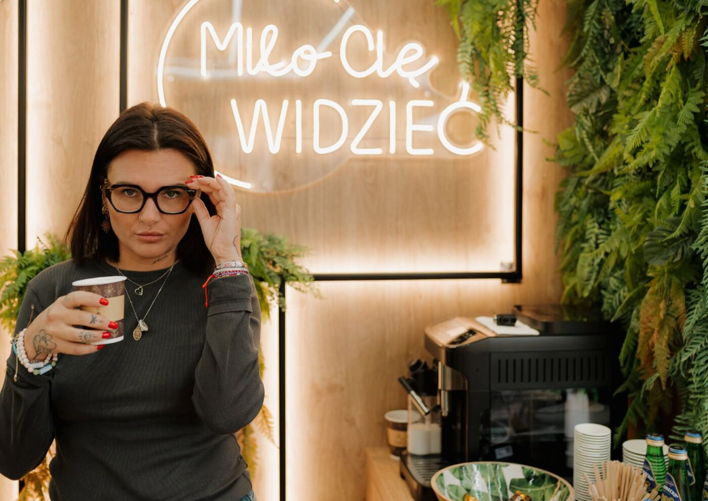

Lublin · ul. Obywatelska 11
Zobacz wyraźnie. Przy kawie.
Badanie wzroku, okulary i soczewki w Lublinie. Bez pośpiechu, z kimś, kto naprawdę pomoże wybrać.

Nasza oferta
Dobry wzrok.
Twój styl.
Od spokojnej rozmowy po wybór oprawek. Znajdź to, czego potrzebujesz — resztę omówimy przy kawie.
Zacznij od badania
Badanie wzroku
Dokładne badanie i spokojna rozmowa.
Dowiedz się więcej
Dopasowane do Ciebie
Okulary korekcyjne
Oprawki, w których jesteś sobą. Soczewki dopasowane do Twojego dnia.
Dowiedz się więcej
Okulary progresywne
Do czytania, pracy i patrzenia w dal. Poznaj możliwości jednej pary.
Okulary przeciwsłoneczne
Na słoneczne dni i codzienne wyjścia. Porozmawiajmy o doborze okularów.
Soczewki kontaktowe
Swoboda na co dzień. Zapytaj o dobór soczewek i sposób ich używania.
Recepty refundowane
Masz receptę? Zapytaj o możliwość refundacji i potrzebne dokumenty.
Nasz salon
Okulary wybiera się dłużej niż minutę
Dlatego w naszym salonie w Lublinie dajemy Ci czas na spokojne przymierzanie, porównanie i rozmowę. Zależy nam, abyś czuł się dobrze i widział jeszcze lepiej.
Poznaj nas →Jak ostro widzisz tę tablicę?
Przesuń suwak i zobacz, jak zmienia się ostrość. To tylko ilustracja, a nie badanie wzroku. To prawdziwe wykonamy w salonie.
Dowiedz się o badaniu wzrokuNajczęściej zadawane pytania
Czy trzeba się umawiać?
Najlepiej zadzwonić i umówić termin. Wtedy mamy dla Ciebie czas.
Ile kosztuje badanie wzroku?
Cenę podamy telefonicznie lub w salonie.
Co zabrać na wizytę?
Dotychczasowe okulary i, jeśli masz, aktualną receptę.
Czy mogę przymierzyć wiele oprawek?
Tak. Wybór oprawek to najprzyjemniejsza część wizyty, a kawa czeka.
Czy realizujecie recepty refundowane?
Zadzwoń i zapytaj, powiemy, co zabrać i jak to wygląda.
Gdzie jesteście?
Przy ul. Obywatelskiej 11 w Lublinie. Mapa jest poniżej.
Do zobaczenia przy kawie.
Odwiedź nasz salon w Lublinie.
- Adres salonuul. Obywatelska 11, 20-092 Lublin
- Zadzwoń do nas723 980 100optykprzykawce@gmail.com
- Godziny otwarciaPon.–pt.: 9:00–18:00Weekend: zamknięte